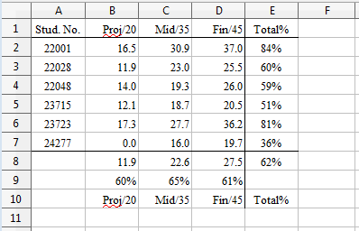
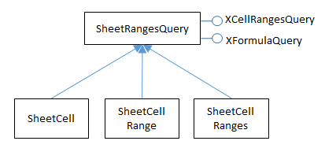
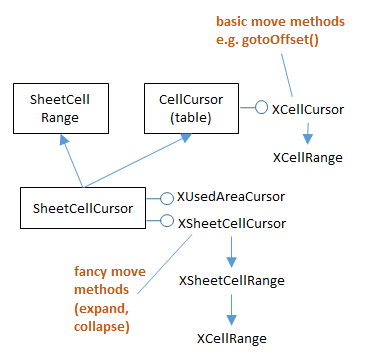

Chapter 21. Extracting Data¶
Topics
Getting a Cell Value; Getting the Data from a Cell Range; Getting Rows and Columns of Data; Obtaining Cell Ranges by Using Queries; Finding the Used Area with Sheet Cursors
Example folders: "Calc Tests" and "Utils"
This chapter is about extracting data from a spreadsheet. Two types of extraction are described: methods which are supplied with a predetermined cell range in order to obtain data from cells, rows, columns, and 2D regions. The other type of extraction uses cell ranges generated at run time based on content queries applied to the entire used area of the sheet. This approach requires the use of sheet cursors.
All the example code comes from ExtractNums.java, which examines the "small totals.ods" spreadsheet shown in Figure 1.

Figure 1. The "small totals.ods" Spreadsheet.
Numerical data is stored in the cell range A2:D7 and the rest of the values are calculated using formulae.
ExtracNums.java starts by accessing cells and cell ranges by name:
// in ExtractNums.java
public static void main(String args[])
{
String outFnm = null;
if (args.length != 1) {
System.out.println("Usage: run ExtractNums fnm");
return;
}
XComponentLoader loader = Lo.loadOffice();
XSpreadsheetDocument doc = Calc.openDoc(args[0], loader);
if (doc == null) {
System.out.println("Could not open " + args[0]);
Lo.closeOffice();
return;
}
GUI.setVisible(doc, true);
XSpreadsheet sheet = Calc.getSheet(doc, 0);
System.out.println("\nA1 string: " + Calc.getVal(sheet, "A1"));
XCell cell = Calc.getCell(sheet, "A2");
System.out.println("A2 type: " + Calc.getTypeString(cell));
System.out.println("A2 value: " + Calc.getNum(sheet, "A2"));
cell = Calc.getCell(sheet, "E2");
System.out.println("E2 type: " + Calc.getTypeString(cell));
System.out.println("E2 formula: " + Calc.getVal(sheet, "E2"));
System.out.println();
Object[][] data = Calc.getArray(sheet, "A1:E10");
Calc.printArray(data);
double[][] ids = Calc.getDoublesArray(sheet, "A2:A7");
Calc.printArray(ids);
double[] projs = Calc.convertToDoubles(
Calc.getCol(sheet, "B2:B7"));
System.out.println("Project scores");
for(double proj : projs)
System.out.println(" " + proj);
double[] stud = Calc.convertToDoubles(
Calc.getRow(sheet, "A4:E4"));
System.out.println("\nStudent scores");
for(double v : stud)
System.out.println(" " + v);
: // more complex extraction code, explained later
Lo.waitEnter();
Lo.closeDoc(doc);
Lo.closeOffice();
} // end of main()
The output is:
A1 string: Stud. No.
A2 type: VALUE
A2 value: 22001.0
E2 type: FORMULA
E2 formula: =SUM(B2:D2)/100
Row x Column size: 10 x 5
Stud. No. Proj/20 Mid/35 Fin/45 Total%
22001.0 16.4583333333333 30.9166666666667 37.0125 0.843875
22028.0 11.875 23.0416666666667 25.4625 0.6037916666666671
22048.0 13.9583333333333 19.25 25.9875 0.591958333333333
23715.0 12.0833333333333 18.6666666666667 20.475 0.51225
23723.0 17.2916666666667 27.7083333333333 36.225 0.81225
24277.0 0.0 16.0416666666667 19.6875 0.357291666666667
11.9444444444444 22.6041666666667 27.475 0.6202361111111111
0.5972222222222221 0.645833333333334 0.6105555555555561
Proj/20 Mid/35 Fin/45 Total%
Row x Column size: 6 x 1
22001.0
22028.0
22048.0
23715.0
23723.0
24277.0
Project scores
16.4583333333333
11.875
13.9583333333333
12.0833333333333
17.2916666666667
0.0
Student scores
22048.0
13.9583333333333
19.25
25.9875
0.591958333333333
I'll explain the highlighted get methods in the following sections.
1. Getting a Cell Value¶
There are three versions of Calc.getVal() which access a value by cell name or position:
// in the Calc class
public static Object getVal(XSpreadsheet sheet, String cellName)
// get value by cell name
{ Point pos = getCellPosition(cellName);
return getVal(sheet, pos.x, pos.y); // column, row
} // end of getVal()
public static Object getVal(XSpreadsheet sheet,
int column, int row)
// get value by cell position
{ XCell xCell = getCell(sheet, column, row);
return getVal(xCell, column, row);
} // end of getVal()
public static Object getVal(XCell cell, int column, int row)
// get value based on the type of the data in the cell
{
CellContentType type = cell.getType();
if (type == CellContentType.EMPTY)
return null;
else if (type == CellContentType.VALUE)
return new Double( cell.getValue());
else if ((type == CellContentType.TEXT) ||
(type == CellContentType.FORMULA))
return cell.getFormula();
else {
System.out.println("Unknown cell type; returning null");
return null;
}
} // end of getVal()
The third getVal() utilizes XCell.getType() to decide how to extract the value. A cell may contain four different data types: a number, text, a formula, or be empty. When the data is numerical, the double value is accessed by calling XCell.getValue(), while for text or a formula XCell.getFormula() is employed. getVal() returns these different types of data cast to Object.
This return type may be inconvenient for a user, who might have to cast the result to something more specific, such as a double. The support functions include Calc.getNum() which does this task.
There's also Calc.getTypeString() which returns cell type information as a string:
// in the Calc class
public static String getTypeString(XCell cell)
{
CellContentType type = cell.getType();
if (type == CellContentType.EMPTY)
return "EMPTY";
else if (type == CellContentType.VALUE)
return "VALUE";
else if (type == CellContentType.TEXT)
return "TEXT";
else if (type == CellContentType.FORMULA)
return "FORMULA";
else {
System.out.println("Unknown cell type");
return "??";
}
} // end of getTypeString()
2. Getting the Data from a Cell Range¶
Calc.getArray() extracts the data from a cell range as a 2D array of Objects. It utilizes XCellRangeData.getDataArray():
// in the Calc class
public static Object[][] getArray(XSpreadsheet sheet,
String rangeName)
{ XCellRange cellRange = getCellRange(sheet, rangeName);
XCellRangeData crData = Lo.qi(XCellRangeData.class, cellRange);
return crData.getDataArray();
} // end of getArray()
XCellRangeData.getDataArray() evaluates any formulae it encounters. This can be seen in the output from:
// part of ExtractNum.java
Object[][] data = Calc.getArray(sheet, "A1:E10");
The cell range includes several formulae (e.g. in "E8" and "E9"), but the data array contains their numerical values.
If you don't want formulae to be evaluated then you'll need to implement your own version of getArray() which uses XCellRangeFormula. Its getDataArray() method doesn't process formulae. The code would look something like:
XCellRange cellRange = getCellRange(sheet, rangeName);
XCellRangeFormula crForm =
Lo.qi(XCellRangeFormula.class, cellRange);
return crForm.getDataArray();
Calc.getArray() returns a 2D array of Objects. Calc.getDoublesArray() can be employed to cast them to an array of doubles.
3. Getting Rows and Columns of Data¶
Calc.getRow() extracts a row of data by utilizing Calc.getArray() since the array is in row-major order:
// in the Calc class
public static Object[] getRow(XSpreadsheet sheet, String rangeName)
{
Object[][] vals = getArray(sheet, rangeName);
return extractRow(vals, 0); // assumes user wants 1st row
} // end of getRow()
public static Object[] extractRow(Object[][] vals, int rowIdx)
// get specified row index from vals
{
int rowSize = vals.length;
if ((rowIdx < 0) || (rowIdx > rowSize-1)) {
System.out.println("Row index out of range");
return null;
}
else
return vals[rowIdx];
} // end of extractRow()
Calc.getRow() defaults to extracting the first row in the 2D array returned by Calc.getArray(), but it's possible to obtain other rows by directly calling Calc.extractRow().
Extracting a column from a sheet is more tricky since Calc.extractCol() must navigate the row-ordered array returned by Calc.getArray(). The retrieved column is returned as a 1D array:
// in the Calc class
public static Object[] getCol(XSpreadsheet sheet, String rangeName)
{
Object[][] vals = getArray(sheet, rangeName);
return extractCol(vals, 0); // assumes user wants 1st column
} // end of getCol()
public static Object[] extractCol(Object[][] vals, int colIdx)
// extract the specified column index from vals
{
int rowSize = vals.length;
int colSize = vals[0].length;
// assumes all columns are this length
if ((colIdx < 0) || (colIdx > colSize-1)) {
System.out.println("Column index out of range");
return null;
}
else {
Object[] colVals = new Object[rowSize];
for (int row = 0; row < rowSize; row++)
colVals[row] = vals[row][colIdx];
return colVals;
}
} // end of extractCol()
4. Obtaining Cell Ranges by Using Queries¶
A drawback of extracting data from a spreadsheet with getVal(), getArray(), getRow(), and getCol() is that they require the programmer to supply cell names or ranges. In other words, the location of the data must be known beforehand. For example, the call:
double[][] ids = Calc.getDoublesArray(sheet, "A2:A7");
assumes that the data is located in the "A2:A7" range.
A more flexible approach is offered by the SheetRangesQuery service, which can search for a cell range (or ranges) satisfying a content query. For example, it can return a sequence of cell ranges that cover all the numerical data in the sheet, or cell ranges for all the formulae.
The search area for these queries is usually the entire used part of a sheet, which are all the cells containing numbers, text, or formulae. Obtaining this area involves sheet cursors, but the details are hidden inside Calc.findUsedRange().
The following code fragment illustrates how Calc.findUsedRange() and the SheetRangesQuery service can be used together :
// the second half of ExtractNums.java
:
// get the cell range which spans the used area of the sheet
XCellRange usedCellRange = Calc.findUsedRange(sheet);
// find cell ranges that cover all the numerical cells
XCellRangesQuery crQuery =
Lo.qi(XCellRangesQuery.class, usedCellRange);
XSheetCellRanges cellRanges =
crQuery.queryContentCells((short) CellFlags.VALUE);
The cell range returned by Calc.findUsedRange() is converted to XCellRangesQuery, which contains the SheetRangesQuery methods. XCellRangesQuery.queryContentCells() is passed the CellFlags.VALUE constant so that the search will returns ranges that cover all the numerical data.
The SheetRangesQuery service is inherited by SheetCell, SheetCellRange, and SheetCellRanges, as summarized in Figure 2.

Figure 2. The SheetRangesQuery Services and Interfaces.
The XFormulaQuery interface is used to find cells that are used by a formula, or cells that utilize a formula's result.
The CellFlags constants used in XCellRangesQuery.queryContentCells() are
documented at
https://api.libreoffice.org/docs/idl/ref/namespacecom_1_1sun_1_1star_1_1sheet_1_1CellFlags.html#a0f9444c5a241b2cd5f34553b05a18ca8,
or use lodoc cellflags.
The constants can be combined with bit operations, such as "|". For instance, the query:
XSheetCellRanges cellRanges = crQuery.queryContentCells(
(short) (CellFlags.VALUE | CellFlags.FORMULA));
finds all the cell ranges that contain numbers or formulae.
The XSheetCellRanges object is most easily processed as an array of cell range addresses:
CellRangeAddress[] addrs = cellRanges.getRangeAddresses();
The following code prints out each range address and the numerical data in the range:
// part of ExtractNums.java
:
if (cellRanges == null)
System.out.println("No cell ranges found");
else {
System.out.println("Found cell ranges: " +
cellRanges.getRangeAddressesAsString() + "\n");
CellRangeAddress[] addrs = cellRanges.getRangeAddresses();
System.out.println("Cell ranges (" + addrs.length + "):");
for(CellRangeAddress addr : addrs) {
Calc.printAddress(addr);
double[][] vals = Calc.getDoublesArray(sheet,
Calc.getRangeStr(addr));
Calc.printArray(vals);
}
}
For the "small totals.ods" spreadsheet shown in Figure 1, the output is:
Found cell ranges: Marks.A2:D7
Cell ranges (1):
Range: Sheet1.A2:D7
Row x Column size: 6 x 4
22001.0 16.4583333333333 30.9166666666667 37.0125
22028.0 11.875 23.0416666666667 25.4625
22048.0 13.9583333333333 19.25 25.9875
23715.0 12.0833333333333 18.6666666666667 20.475
23723.0 17.2916666666667 27.7083333333333 36.225
24277.0 0.0 16.0416666666667 19.6875
The query found the range A2:D7, which excludes the labels on the first row, and the formula down the "E column and along rows "8" and "9" (see Figure 1). These formulae could be included by modifying the query:
XSheetCellRanges cellRanges = crQuery.queryContentCells(
(short) (CellFlags.VALUE | CellFlags.FORMULA));
The output changes to:
Found cell ranges: Marks.A2:A7,Marks.B2:D9,Marks.E2:E8
Cell ranges (3):
Range: Sheet1.A2:A7
Row x Column size: 6 x 1
22001.0
22028.0
22048.0
23715.0
23723.0
24277.0
Range: Sheet1.B2:D9
Row x Column size: 8 x 3
16.4583333333333 30.9166666666667 37.0125
11.875 23.0416666666667 25.4625
13.9583333333333 19.25 25.9875
12.0833333333333 18.6666666666667 20.475
17.2916666666667 27.7083333333333 36.225
0.0 16.0416666666667 19.6875
11.9444444444444 22.6041666666667 27.475
0.5972222222222221 0.645833333333334 0.6105555555555561
Range: Sheet1.E2:E8
Row x Column size: 7 x 1
0.8438749999999999
0.6037916666666671
0.591958333333333
0.5122500000000001
0.81225
0.357291666666667
0.6202361111111111
The query returned three cell ranges. I thought they would be the numerical region (as before) and two ranges covering the formulae down the "E" column and along rows "8" and "9". Instead, the regions are those highlighted in Figure 3.

Figure 3. The Cell Ranges Returned by the Value+Formula Query.
The shape of these ranges suggests that they're chosen to maximize column length. Also searching for two content types (e.g. numbers and formulae) means that a single cell range may contain both types of data.
5. Finding the Used Area with Sheet Cursors¶
The previous section relied on Calc.findUsedRange() to retrieve the sheet's used area; this section explains how that method is implemented using sheet cursors.
A sheet cursor is analogous to a text cursor but moves across cells in a spreadsheet. As the cursor is moved, its cell range can be expanded or collapsed in a variety of ways, which parallels the selection of text by a text cursor.
Calc.findUsedRange() creates a cursor and then calls findUsedCursor() to expand its cell range over the used area:
// in the Calc class
public static XCellRange findUsedRange(XSpreadsheet sheet)
{ XSheetCellCursor cursor = sheet.createCursor();
return findUsedCursor(cursor);
}
public static XCellRange findUsedCursor(XSheetCellCursor cursor)
{
// use the cursor to select the used area
XUsedAreaCursor uaCursor = Lo.qi(XUsedAreaCursor.class, cursor);
uaCursor.gotoStartOfUsedArea(false); // find start of area
uaCursor.gotoEndOfUsedArea(true); // select to end
XCellRange usedRange = Lo.qi(XCellRange.class, uaCursor);
return usedRange;
} // end of findUsedCursor()
Figure 4 shows the services and interfaces related to sheet cursors.
Calc.findUsedRange() employs the XSheetCellCursor interface.

Figure 4. The SheetCellCursor Services and Interfaces.
An XSheetCellCursor cursor is assigned to a sheet by calling XSpreadsheet.createCursor() or XSpreadsheet.createCursorByRange().
Calc.findUsedRange() needs the ability to find the sheet's used area, which is obtained by converting XSheetCellCursor into XUsedAreaCursor (see Figure 4):
// in Calc.findUsedCursor()
XUsedAreaCursor uaCursor = Lo.qi(XUsedAreaCursor.class, cursor);
uaCursor.gotoStartOfUsedArea(false);
uaCursor.gotoEndOfUsedArea(true);
The goto methods move the cursor to the start and end of the used area, and by calling gotoEndOfUsedArea() with a true flag, the cursor's cell range is extended from the start of the used area to its end.
The cell range is retrieved by converting the cursor into a XCellRange:
java
XCellRange usedRange = Lo.qi(XCellRange.class, uaCursor);